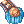
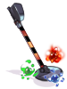
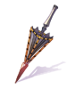

Einbech Dungeon 3
Einbech Dungeon 3 is the third floor of the well-known Einbech Dungeon.
It's considered an end game dungeon, requiring anyone that wishes to enter to be at least level 180. Being in a party and having appropriate equipment is also recommended.
Besides being a good leveling place, it's possible to obtain new cards and the new Obtainable Equipment.
Access

After obtaining at least level 180, to access the dungeon:
- Via the earlier floor, Einbech Dungeon 3, as shown on the minimap on the right.
Monsters
This map has monsters that have drops with increased rates:
- Monsters will show them when you use @mi .
- Not all drops of a monster are affected by it, you've to check them one by one.
- Any type of Bubble gum will not affect the drop rate of these items and you see a (No Gum) on @mi.
- Example: Banana Bread 2.00% (No Gum)
- In this map the items affected are
 Redium,
Redium,  Odium,
Odium,  Rindium, Purdium, and
Rindium, Purdium, and  Whidium
Whidium
| Image | Name | Level | HP | Size / Race / Element |
|---|---|---|---|---|
| Poisonous | 188 | 2,407,086 | Medium / Formless / Ghost 4 | |
| Toxious | 188 | 2,407,556 | Medium / Formless / Poison 4 | |
| Green Mineral | 190 | 2,435,702 | Large / Formless / Neutral 4 | |
| Red Mineral | 190 | 2,435,702 | Large / Formless / Neutral 4 | |
| White Mineral | 190 | 2,436,177 | Large / Formless / Neutral 4 | |
| Purple Mineral | 190 | 2,435,702 | Large / Formless / Neutral 4 | |
| Jewel | 192 | 100 | Large / Formless / Neutral 4 | |
| White Porcellio | 206 | 2,403,326 | Small / Insect / Earth 4 | |
| Abyssman | 190 | 2,428,277 | Large / Beast / Neutral 4 | |
| Jewelry Ant | 191 | 2,445,656 | Medium / Insect / Neutral 4 | |
Jungoliant
|
197 | 40,000,000 | Large / Insect / Neutral 4 |
Rewards
The monster on the map drop 5 different kind of ores:
By combining each of the 5 different ores with Field Manager Elmen , you get one  Dynite
Dynite
The dynites can be used to purchase from the same NPC, the new safety accessories, safety weapons, and modification permits which you can find in the below section.
Obtainable Equipment
Einbech Accessories
Einbech Accessories can be purchased directly from Elmen.
| Image | Name | Price | Slot | Description |
|---|---|---|---|---|
| Safety Pendant R [1] | 75
|
Accessory (Right) Defense: 10 Weight: 10 Required Level: 170 Jobs: Every Job |
[+  Safety Epaulet B [1]]
[+ [+ Any Einbech Weapon]
| |
| Safety Pendant B [1] | 75
|
Accessory (Right) Defense: 10 Weight: 10 Required Level: 170 Jobs: Every Job |
[+ [+ Any Einbech Weapon]
| |
| Safety Epaulet R [1] | 75
|
Accessory (Left) Defense: 10 Weight: 10 Required Level: 170 Jobs: Every Job |
| |
| Safety Epaulet B [1] | 75
|
Accessory (Left) Defense: 10 Weight: 10 Required Level: 170 Jobs: Every Job |
|

Einbech Weapons
Einbech Weapons can be obtained at random for the cost of 50 Dynites from Elmen.
| Image | Name | Slot | Desc |
|---|---|---|---|
| Safety Knuckle [2] | Knuckle
Attack: 210 Weight: 180 Weapon Level: 4 Required Level: 170 Applicable Jobs: Sura |
| |
|  | Detecting Staff [2] | Two-handed Staff
Attack: 180 Weight: 200 Weapon Level: 4 Required Level: 170 Applicable Jobs: Warlock |
|
| Grinder Huuma Shuriken [2] | Huuma
Attack: 280 Weight: 180 Weapon Level: 4 Required Level: 170 Applicable Jobs: Ninja |
| |
| Rubber Hammer [2] | Mace
Attack: 160 Weight: 190 Weapon Level: 4 Required Level: 170 Applicable Jobs: Arch Bishop |
| |
| Bolt Shooter [2] | Bow
Attack: 210 Weight: 170 Weapon Level: 4 Required Level: 170 Applicable Jobs: Ranger |
| |
| Claw Sword [2] | Two-handed Sword
Attack: 300 Weight: 350 Weapon Level: 4 Required Level: 170 Applicable Jobs: Rune Knight |
| |

|
Welding Wand [2] | Rod
Attack: 160 Weight: 120 Weapon Level: 4 Required Level: 170 Applicable Jobs: Mage Class, Soul Reaper |
|
| Safety Whip [2] | Whip
Attack: 200 Weight: 140 Weapon Level: 4 Required Level: 170 Applicable Jobs: Wanderer |
| |
| Bolt Crusher [2] | Katar
Attack: 300 Weight: 200 Weapon Level: 4 Required Level: 170 Applicable Jobs: Guillotine Cross |
| |
| Saw Axe [2] | Two-handed Axe
Attack: 350 Weight: 500 Weapon Level: 4 Required Level: 170 Applicable Jobs: Mechanic |
| |
| Safety Manual [2] | Book
Attack: 200 Weight: 70 Weapon Level: 4 Required Level: 170 Applicable Jobs: Star Emperor |
| |
| Metal Detector Mk47 [2] | Dagger
Attack: 200 Weight: 100 Weapon Level: 4 Required Level: 170 Applicable Jobs: Guillotine Cross |
| |

|
Jewel Detector Mk47 [2] | Dagger
Attack: 190 Weight: 100 Weapon Level: 4 Required Level: 170 Applicable Jobs: Shadow Chaser |
|
| Safety Foxtail [2] | Rod
Attack: 300 Weight: 150 Weapon Level: 4 Required Level: 170 Applicable Jobs: Doram race |
| |
|  | Blocking Spear [2] | Spear
Attack: 210 Weight: 300 Weapon Level: 4 Required Level: 170 Applicable Jobs: Royal Guard |
|
| Safety Lute [2] | Instrument
Attack: 200 Weight: 140 Weapon Level: 4 Required Level: 170 Applicable Jobs: Minstrel |
| |
| Bolt Revolver [2] | Pistol
Attack: 200 Weight: 180 Weapon Level: 4 Required Level: 170 Applicable Jobs: Rebellion |
| |
| Safety Saber [2] | Sword
Attack: 200 Weight: 250 Weapon Level: 4 Required Level: 170 Applicable Jobs: Genetic |
|
Weapon Enchantment
Einbech weapons can be further enchanted using Modification Permits. There are two kinds of permits:
They can both be purchased from Elmen , at the cost of 30 Dynites
Both permits are consumables that will give a set of three random enchants to a single Einbech Weapon, one enchant for each of the three slots of enchants available.
If the enchants are not up to your liking, a new permit can be purchased and used to reroll a new set of enchants.
You can exchange Physical Permits for Magical and vice-versa.
 Physical Modification Permit Physical Modification Permit
| ||
|---|---|---|
| First Enchant | Second Enchant | Third Enchant |
|
|
|
 Magical Modification Permit Magical Modification Permit
| ||
|---|---|---|
| First Enchant | Second Enchant | Third Enchant |
|
|
|
Cards
| Card | Type | Description |
|---|---|---|
 Poisonous Card Poisonous Card
|
Weapon Card |
|
 Toxious Card Toxious Card
|
Armor Card |
|
 White Porcellio Card White Porcellio Card
|
Footgear Card |
|
 Neo Mineral Card Neo Mineral Card
|
Garment Card |
|
 Abyssman Card Abyssman Card
|
Footgear Card |
|
 Jewelry Ant Card Jewelry Ant Card
|
Accessory(Left) Card |
|
 Jewgoliant Card Jewgoliant Card
|
Armor Card |
|